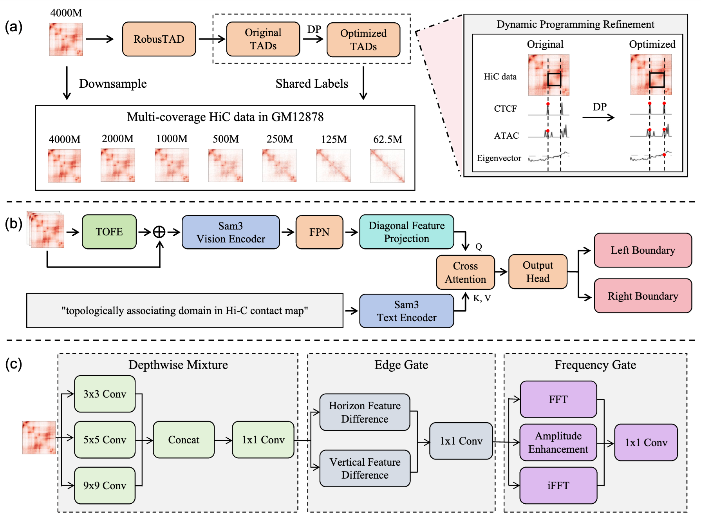
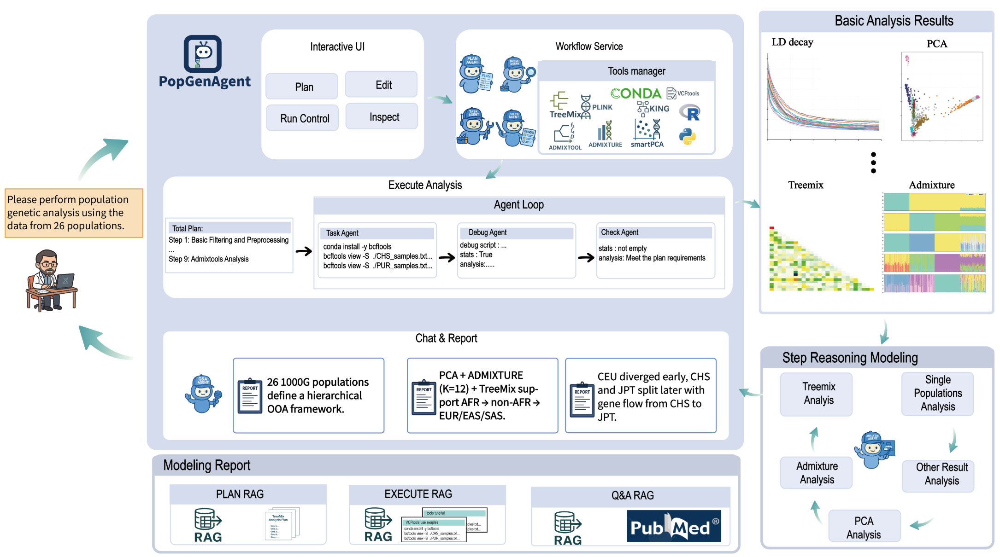
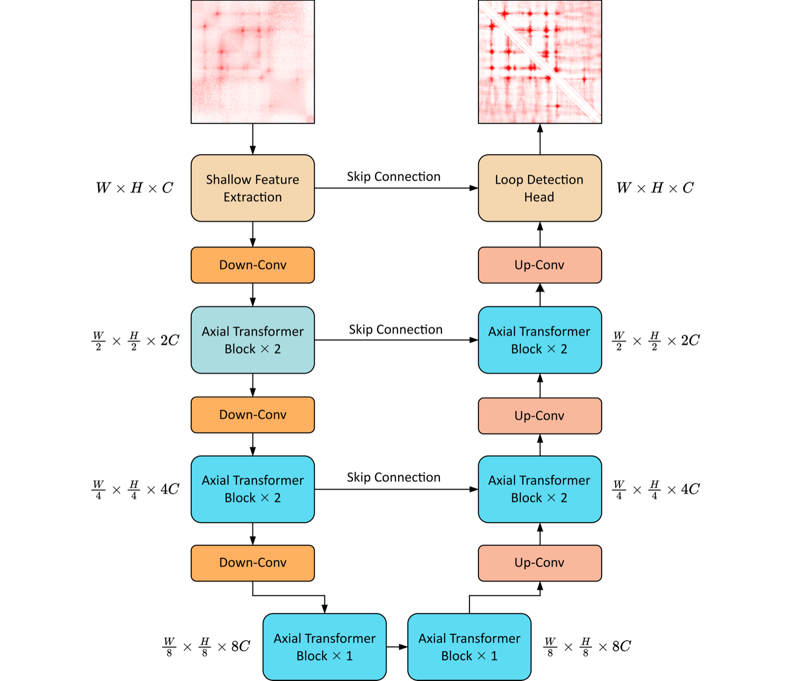
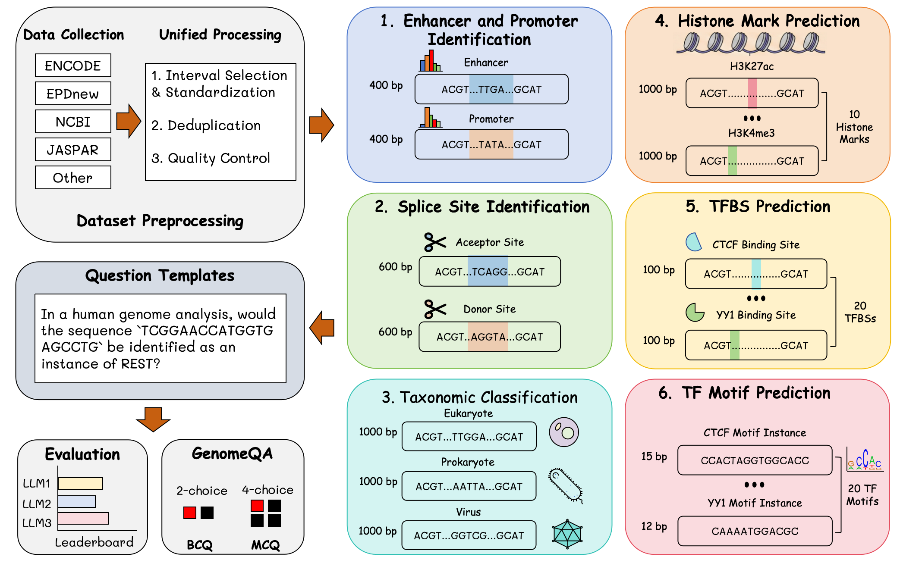
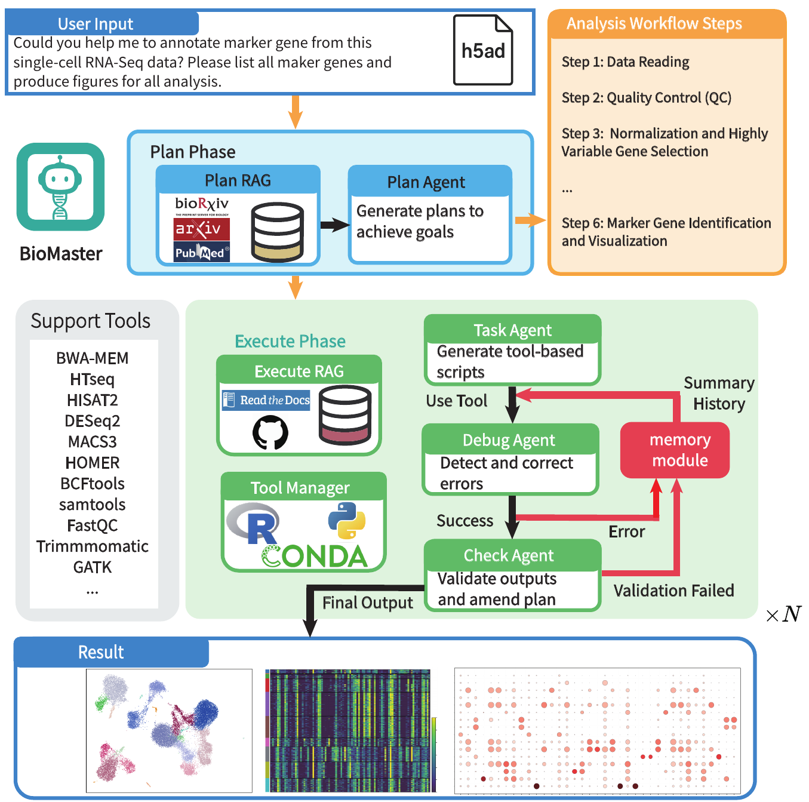
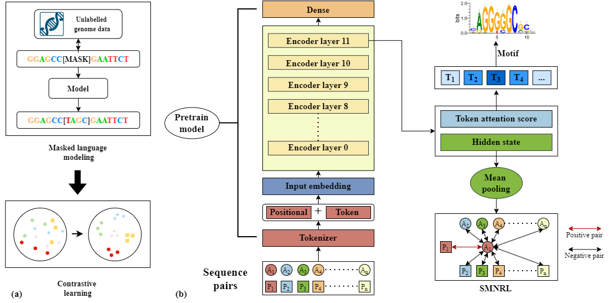

Publications
Workshop papers, preprints, and peer-reviewed publications are listed in reverse chronological order. * denotes equal contribution.
Workshop & Preprint



Conference

GenomeQA: Benchmarking General Large Language Models for Genome Sequence Understanding
Proceedings of the 64th Annual Meeting of the Association for Computational Linguistics (ACL), 2026.

PhageBench: Can LLMs Understand Raw Bacteriophage Genomes?
Findings of the Annual Meeting of the Association for Computational Linguistics (Findings of ACL), 2026.
Journal

BioMaster: multi-agent system for automated bioinformatics analysis workflow
Patterns, 2026. Cover Article

NyxBind: enhancing deep neural representations for transcription factor binding site prediction via contrastive learning
Briefings in Bioinformatics, 2026.